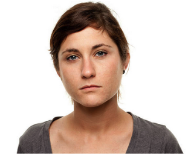

Lucy Smith

Age:
17 years oldOccupation:
High school studentAbout Lucy:
She's a shy 17 year old straight-A high school student who likes collecting shoes.She loves watching Netflix shows and surfing through the interwebs. She's also a big bookworm.
Goals:
- Graduate from school
- Buid up resume and network
- Get into a good university
- Meet people outside of school
Needs:
- Gain volunteer hours
- Learn more about different careers by volunteering
- A way to take mind off studies
Pain Points:
- Low self-esteem
- Lonely
- Doesn't know where to find volunteer opportunities and meet people//changed